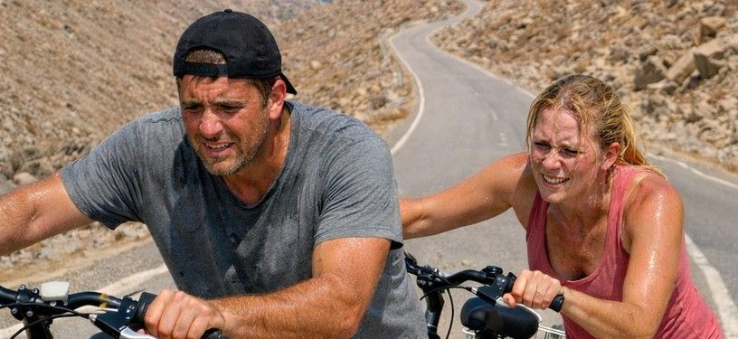
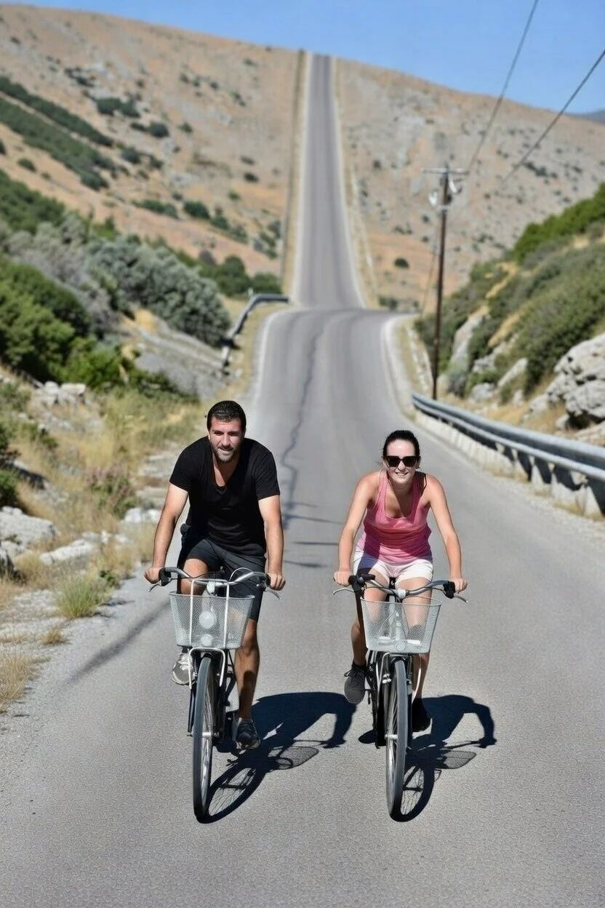

Makkelijk?
Wat toeristen regelmatig te horen krijgen, is dat men de Embros Thermae makkelijk per fiets kan bereiken.
Waarschijnlijk heeft degene die het vertelt dit nog nooit zelf gedaan – tenzij hij een goed geoefend fietser is.
Makkelijk per fiets? Alleen als je al een goede fietser bent.

Wat toeristen regelmatig te horen krijgen, is dat men de Embros Thermae makkelijk per fiets kan bereiken.
Waarschijnlijk heeft degene die het vertelt dit nog nooit zelf gedaan – tenzij hij een goed geoefend fietser is.

Als je denkt aan een relaxte fietstocht, dan is de route naar Therma waarschijnlijk niet wat je zoekt.
Deze tocht is voornamelijk geschikt voor de zeer geoefende fietser. De meeste toeristen die deze tocht aandurven zijn op zoek naar een uitdaging – niet naar een ontspannen middagje fietsen.
Door de steile klim op het einde is het alleen aan te raden voor wie echt fit is. Overweeg in plaats daarvan de auto, scooter of buggy.
Easy by bike? Only if you’re already a strong cyclist.
Tourists often hear that the Embros Thermae are easy to reach by bike.
The person saying that has probably never done it themselves – unless they’re already a well-trained cyclist.
If you’re thinking of a relaxed bike ride, the route to Therma is probably not what you’re looking for.
This trip is mainly for the very experienced cyclist. Most tourists who try it are looking for a challenge – not a laid-back afternoon on the bike.
Because of the steep climb at the end, it’s only recommended if you’re really fit. Consider a car, scooter or buggy instead.
Einfach per Rad? Nur wenn du schon ein guter Radfahrer bist.
Touristen hören oft, die Embros Thermae seien leicht mit dem Rad erreichbar.
Wer das sagt, hat es wahrscheinlich nie selbst gemacht – außer er ist schon ein gut trainierter Radfahrer.
Wer eine entspannte Radtour sucht, findet die Route nach Therma vermutlich nicht.
Die Tour eignet sich vor allem für sehr geübte Radfahrer. Wegen des steilen Anstiegs am Ende besser Auto, Roller oder Buggy nehmen.
Facile in bici? Solo se sei già un ciclista allenato.
I turisti sentono spesso che le Embros Thermae si raggiungono facilmente in bici.
Chi lo dice probabilmente non l’ha mai fatto – a meno che non sia già un ciclista ben allenato.
Se cerchi un giro rilassato, la strada per Therma non è quella giusta.
Il percorso è soprattutto per ciclisti molto esperti. Per la salita ripida finale meglio auto, scooter o buggy.
Bisikletle kolay mı? Sadece iyi bisikletçiyseniz.
Turistler sıkça Embros Thermae’nin bisikletle kolay ulaşılabildiğini duyar.
Bunu söyleyen muhtemelen kendisi hiç yapmamıştır – iyi antrenmanlı bir bisikletçi değilse.
Rahat bir bisiklet turu arıyorsanız Therma rotası uygun değil.
Bu yolculuk özellikle çok deneyimli bisikletçiler içindir. Sondaki dik yokuş nedeniyle araba, scooter veya buggy tercih edin.
¿Fácil en bici? Solo si ya eres un ciclista fuerte.
Los turistas oyen a menudo que las Embros Thermae se alcanzan fácilmente en bici.
Quien lo dice probablemente no lo ha hecho nunca – salvo que ya sea un ciclista bien entrenado.
Si buscas un paseo relajado, la ruta a Therma no es la adecuada.
El recorrido es sobre todo para ciclistas muy experimentados. Por la subida empinada al final, mejor coche, scooter o buggy.